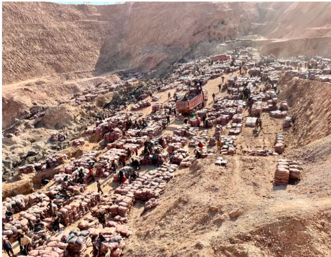
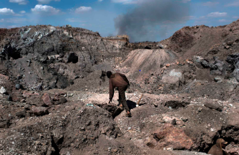
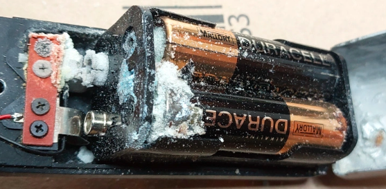

Human Impact
Batteries are an essential part of our lives. Without them, countless electronics would cease to function. Batteries, however, have a detrimental impact on many lives. From mining minerals in batteries to the manufacturing process, many lives are put at risk. Cobalt is mined for the production of various types of batteries. Roughly 40,000 children toil in Cobalt mines. Furthermore, 15,000 people are die in mines anuually. While we cannot stop using batteries, we must be mindful of how we use and dispose of batteries.
Enviornmental Impact
While batteries provide many convinent and mobile solutions to many problems in our lives, manufacturing batteries comes at a cost. Mining the minerals necessary to producing batteries releases large amount of green house gases and drains a land off of its natural resources. Mining for minerals can take up to 65% of a country's water. Runoff from mines can pollute nearby water sources. The pollution can take upwards of 100 years to clear. Furthermore, fine dust particles from blasting and mining the earth can harm local ecosystems. Climitologists estimate that for every tonne of mined minerals, such as lithium, 15 tonnes of carbon dioxide are released. The emissions from these practices contribute to pollution on a global scale. As more minerals are needed, more mines are opened and more ecosystems are destroyed. Mining for resources is critical to the manufacturing of batteries, but mining, in of itself is a polluting and harmful process. As consumers, we must be careful of how we expend these resources.
Impacts of Wasting Batteries
Batteries are means to store electrical energy in the form of chemical energy. Disposing batteries properly is essential to preventing enviornemental damage. Disposing batteries in a landfill contributes to the amount of metal in the landfill. Excessive amounts of metal in the land fill can lead to contamination of water sources. Furthermore, the electrolyte of a battery is corrosive, eventually any battery will leak. If left in a landfill, the poisonus electrolyte will make its way into the enviornment, and potentially into our water sources.Situations where the battery negatively impacts the environemtn can be prevented by drawing more life out of every battery and recycling batteries.
Actions to Take
While it is impossible to entirely stop using batteries, actions can be taken to iminimze the harmful impacts of batteries. Batteries are costlys no in a monetary sense, but in a humanitarian and evnrionemtnal sense. Some tips to help minimize battery wastage are as follows:
- Avoid leaving batteries in electronics one knows one will not use often.
- Use rechargeable batteries as opposed to single use.
- Do not throw away batteries once they cannot perform a task, rather, reuse the battery in a less intensive method.
How to Use this App
This app is designed to assist with minimzing the waste of rechargeable batteries. Wasting batteries is a factor causes unnecessary harm to the environemtna and the lives of individuals both through the repeated manufacturing process and the impacts of imporper disposal. The goal of this web based app is to prevent the excessive waste of batteries.
This app can be accessed after creating an account. In the 'Add Batteries' tab, one enters various information about the batteries one uses. One can view this information in the 'View Batteries tab'. This information can be edited in the 'Edit Application tab'. The app will count the days until the capacity of the eneted battery drops below half of the oepration capacity of the device entered. At this stage, the app will match the half capacity batteries to another appliance. Then the app will send the user a notification to trade the batteries from the higher capaicty appliance to the lwoer cpaaicty appliace. The simplified switching process ensures that a user minimizes the batteries they waste by extracting the maximum life out of every battery via repurposing the battery.
Sources
https://unctad.org/news/developing-countries-pay-environmental-cost-electric-car-batteries
https://www.theworldcounts.com/challenges/planet-earth/mining/health-effects-of-mining
https://ecojungle.net/post/lithium-extraction-environmental-impact/#:~:
text=Lithium%20mining%20destroys
%20the%20soil,to%
20the%20risk%20of%
20extinction.
https://climate.mit.edu/ask-mit/how-much-co2-emitted-manufacturing-batteries
https://gsiwaste.com/battery-recycling-is-important-for-environmental-health/#:~:text=1)%20Improperly%
20disposed%20batteries
%20contribute%20to%20water%20and%20air%
20pollution.&text=When%20depleted%20batteries
%20are%20tossed,contaminate
%20groundwater
%20and%20surface%20water.
https://www.cirbasolutions.com/learning-center/recycling-benefits/
https://hackaday.com/2022/10/19/crusty-leaking-cells-kill-your-tech-just-whats-going-on/